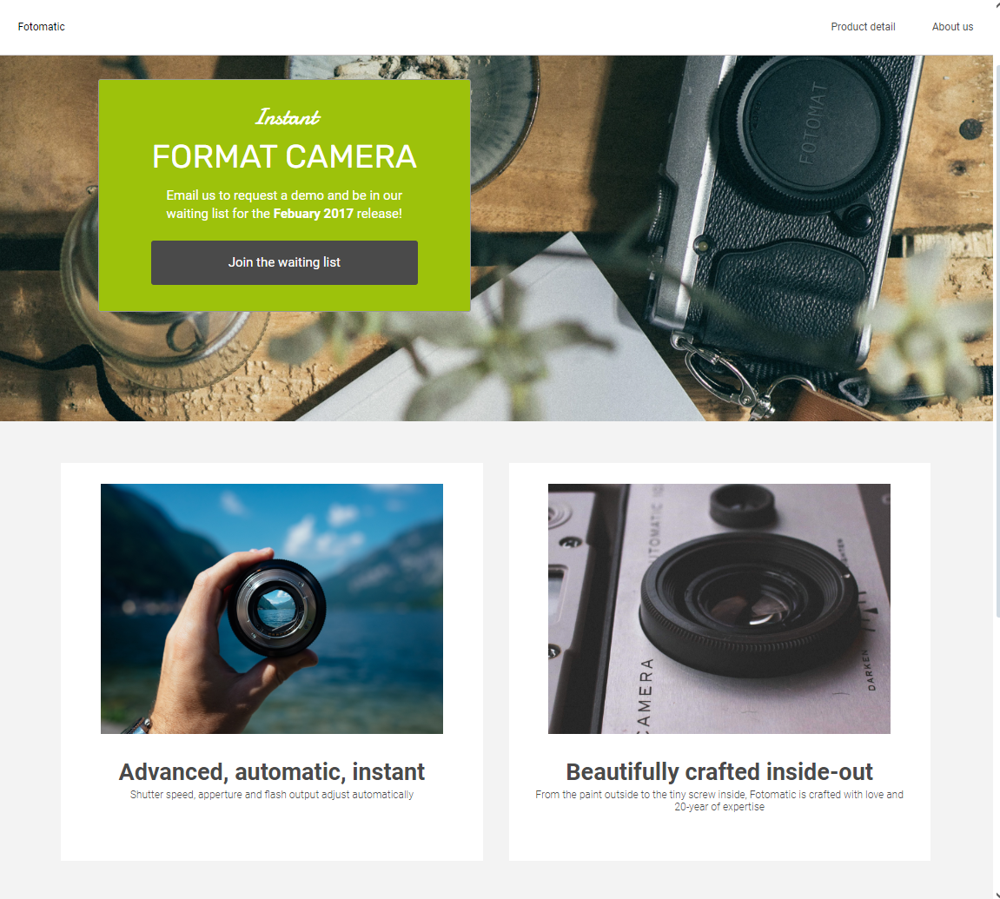
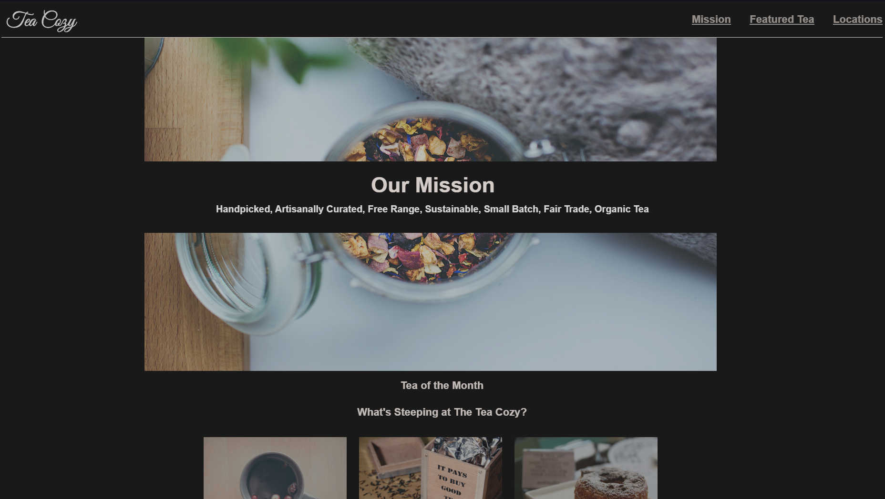
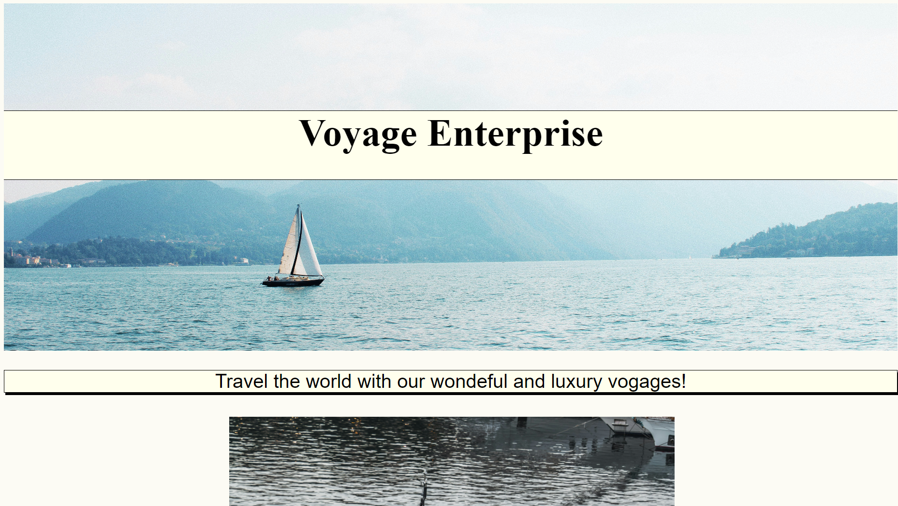
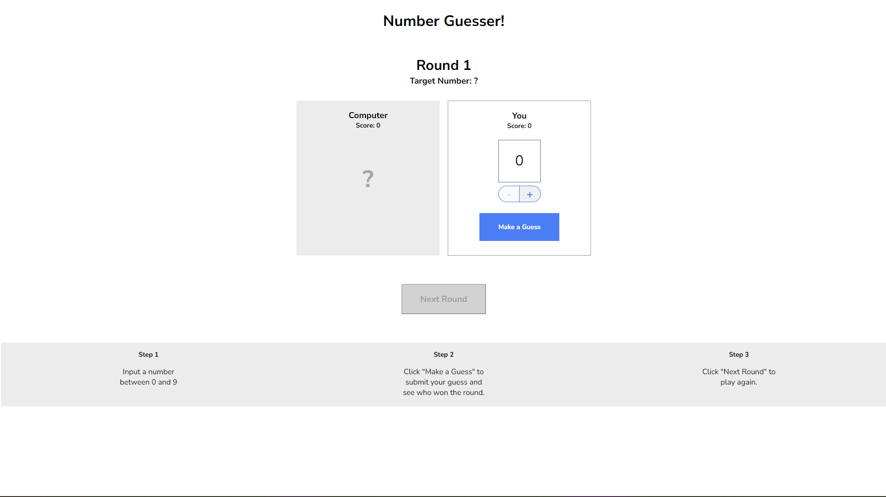
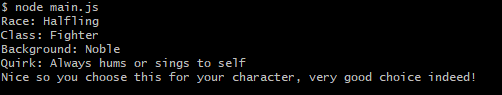

About Me
Hey there! I'm Ethan Jones, a tech enthusiast with a dual nationality, born in the United States and proud citizen of Costa Rica.
My journey is fueled by an insatiable curiosity about technology and a deep passion for exploring the endless possibilities it offers.
In the digital realm, I find my canvas in coding, where every line of code is a stroke of creativity. Much like an adventurer charting
unexplored territories, I thrive on learning and mastering new programming languages and techniques, always pushing the boundaries
of what's possible.
When I'm not immersed in the world of coding, you might find me in the midst of an epic gaming session! After all,
what's life without a little fun and games?
Join me on this exhilarating journey as I continue to improve, innovate, and create, one line of code at a time.
Projects
Skills
Fun Fact!
it has been Days:0, Hours:0, Minutes:0, Seconds:0. Since this tab has been open!
Fotomatic Website
Project where I had to learn how to debug code for html and css
Tea Cozy
First Project where I had to use my flexbox and grid skills to develop the website Tea-cozy!
Business Webpage
My very first solo project where I had to use all the fundamentals that I learned HTML and CSS and make my own business website!
Number Guesser
This project help me understand the use of javascript applied on the web.
Random Message
My first solo javascript project where I had to make random messages and I took inspiration after my favorite hobby: Dungeons and Dragons!